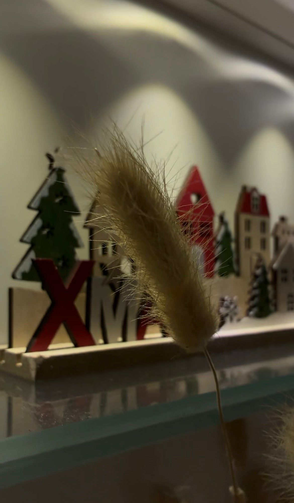
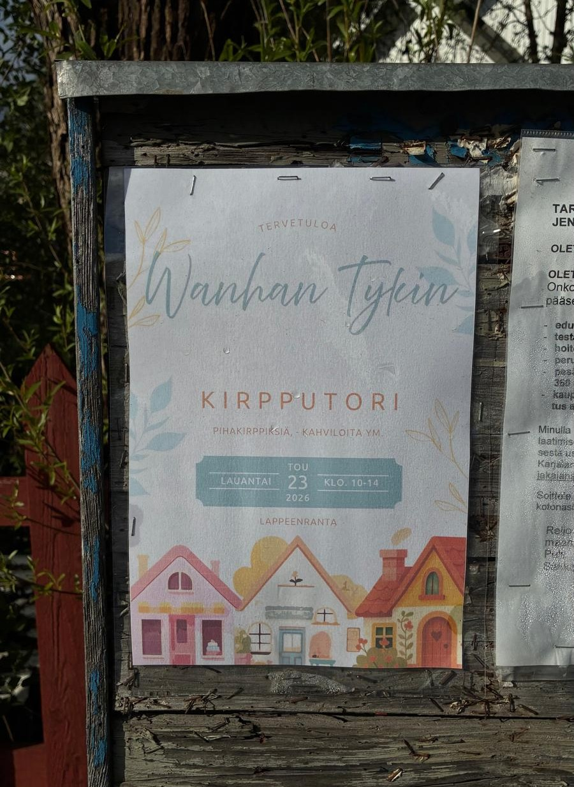
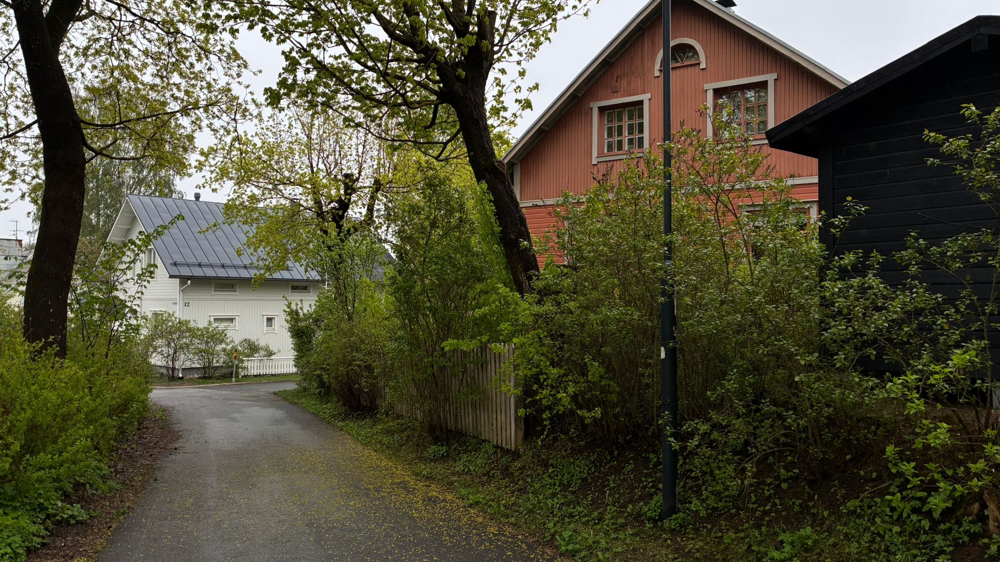

Wanhan Tykin yhteisö on aktiivinen ja tapahtumarikas. Alueella järjestetään vuosittain erilaisia tapahtumia, jotka tuovat asukkaat yhteen ja luovat yhteisöllisyyttä. Tässä muutamia esimerkkejä tapahtumista, joita alueella on järjestetty:

Joulukalenterit talojen ikkunoissa
Joulukuussa järjestetään yhteinen joulukalenteri, johon halukkaat voivat ilmoittautua. Halukkaat valitsevat omat päivät ja ikkuna koristellaan kyseiseksi päiväksi. Wanhan Tykin joulukalenteri-ikkunat houkuttelevatkin päiväkävelijöitä katselemaan upeita luonnoksia.
Päivitetty 15/5/2026

Kirpputori kesäisin
Kesäisin alueella järjestetään yhteinen kirpputori -päivä, jolloin halukkaat voivat osallistua tapahtumaan. Tuona päivänä halukkaat voivat tehdä omalle pihalleen kirpputorialueen. Tule siekin kiertelemään!
Päivitetty 15/5/2026

Pop-up kahvilat
Alueella järjestetään vaihtelevasti pop-up kahviloita, jossa on tarjolla itsetehtyjä kakkuja, leivoksia ja pientä suolaista. Näissä on aina kiva tunnelma!
Päivitetty 15/5/2026